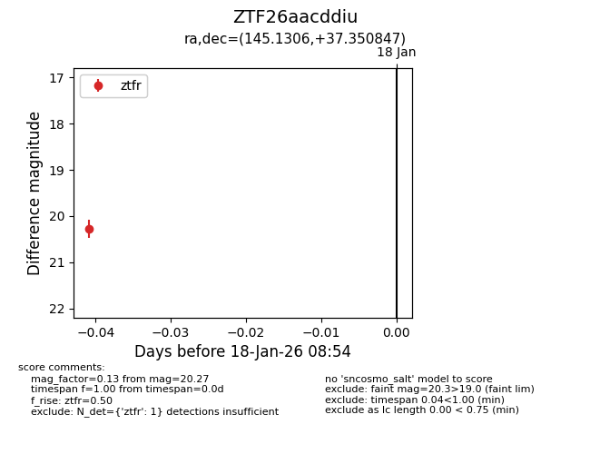
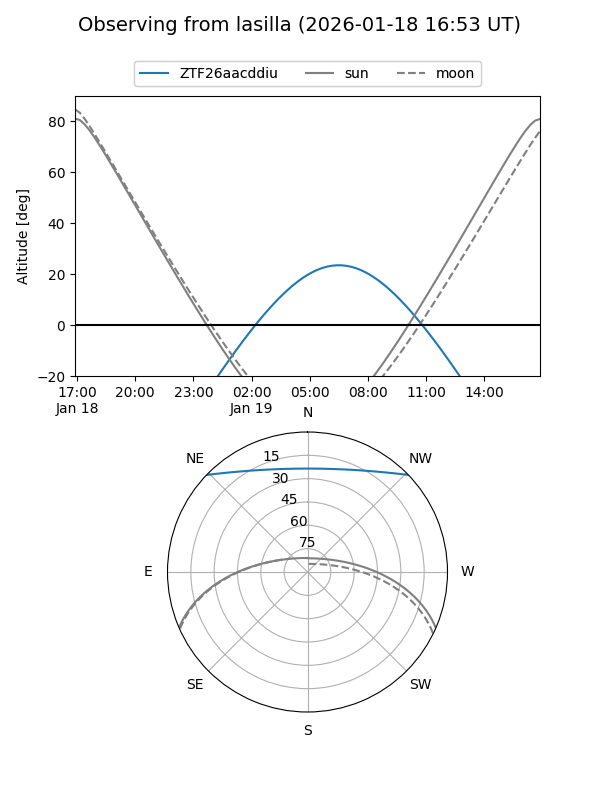
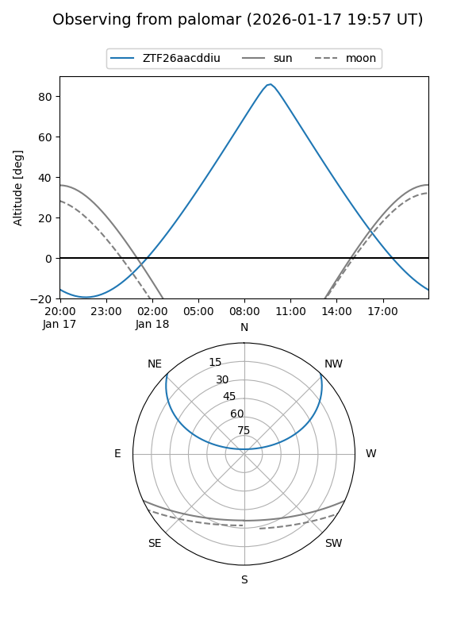

ZTF26aacddiu
Target ZTF26aacddiu at 2026-01-18 08:55
Aliases and brokers:
FINK: link
Lasair: link
ALeRCE: link
alt names
ZTF26aacddiu (ztf,fink_ztf)
Coordinates:
equatorial (ra, dec) = 145.1306,+37.35085
equatorial (HMS+DMS) = 09:40:31.35,+37:21:03.05
galactic (l, b) = (186.2097,+48.80949)
Flags:
Photometry:
last ztfr=20.27
1 ztfr detections
Lightcurve

Visibility


Additional plots